1. 认识序匣
序匣适合整理下载资料、票据、项目文档、照片、扫描件和视频素材。它先生成建议，再由您决定是否真正修改文件。
它能做什么
- 读取文件文字、元数据和可用的视觉内容。
- 通过已就绪的本地模型，或您明确选择的云端 AI Provider 生成命名建议。
- 可按模板组合精确字段，也可让 AI 按内容生成具体摘要；两种模式都允许手工修改。
- 逐文件应用重命名、移动并保存撤销（Undo）历史。
- 监控指定文件夹，对新文件执行审核或自动应用流程。
它不会擅自做什么
- 仅导入、分析或编辑建议名称时，不会改动磁盘文件。
- 不会强迫您同时配置多个 Provider。
- 不会把 API Key 写进普通设置文件。
- 不会上传完整视频。
- 不会把“清空工作区”当成文件撤销。
2. 开始之前
- 确认环境。使用受支持的 Windows 桌面系统，并确保当前 Windows 用户对源目录、目标目录具有读写权限。
- 选择处理方式。本地隐私无需 Provider 账户或测试连接，先按本地章节准备资源；只有云端 AI 才需要从服务商获取 API Key、可用模型名和 Base URL，能力须与内容匹配。
- 准备网络或离线资源。本地扫描、提取、关键帧和重命名不需要联网；云端请求需要访问所选 Provider。首次下载公开本地资源仍需您单独同意联网，也可导入规定的离线资源。
- 启动软件。打开安装目录中的
Xuxia.exe。无需安装开发工具或运行命令行。
3. 配置云端 AI
本章仅适用于云端 AI；本地隐私不需要配置云端账户。云端采用“单一当前 Provider”规则：同一时刻只有一个配置被激活。您可以保存多个候选配置，但云端处理只使用标记为当前 Provider的那一个。
- 打开左侧导航底部的 设置。
- 选择 DeepSeek、Qwen、MiMo、智谱、Kimi 预设，或选择 Custom 添加兼容服务。
- 填写服务商提供的 Base URL、模型名和 API Key。不要复制多余空格。
- 点击测试连接。测试只发送固定的最小请求，用于确认地址、认证与模型是否可用。
- 连接成功后将其设为当前 Provider，再点击保存。字段再次改变后，需要重新测试连接。
| 能力标识 | 含义 | 不支持时 |
|---|---|---|
| 文本 | 理解文档提取文字与元数据 | 文档内容无法交给该 Provider 命名 |
| 图片 / 扫描件 | 接收缩放后的图像或扫描页 | 仅使用本地可提取的文字与元数据，或要求换用兼容 Provider |
| 结构化命名输出 | 稳定返回模板需要的字段 | 任务进入可见失败或降级状态，不会伪造成功 |
| 视频 | 本地提取视频关键帧后按图片分析 | 不能分析视觉内容；不会改成上传整段视频 |
预设用于提供常见的配置入口和能力标签，不保证您账户中的某个模型永久可用。应以服务商当前模型目录、账户权限和“测试连接”结果为准。第三方网关或自定义模型不能仅凭名称推断文本、图片、扫描件或结构化输出能力。
选择模型后先测试连接，再保存并设为当前 Provider。已有设置、模板和监控配置不会因为手册更新而自动切换。
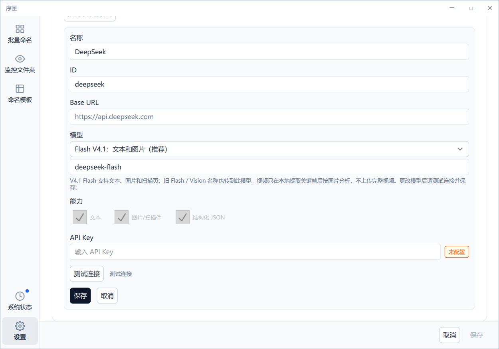
5. 五分钟快速上手
- 进入批量命名，先选择按模板命名或 AI 智能命名。默认仍是按模板命名。
- 另在标题下的处理栏确认云端 AI 或本地隐私。选择本地时须先完成资源准备并达到 READY；云端则先完成云端章节所述连接配置。两种处理方式都支持两种命名模式。
- 按模板命名时选择模板；AI 智能命名不要求选择通用字段模板。需要移动时再选择目标目录。
- 把文件拖入空态区域，或点击添加文件或添加文件夹。确认文件名语言后再导入；导入文件夹时可以递归扫描。
- 检查粗体建议名和灰色原文件名。点击铅笔可编辑建议，非法名称会显示行内错误。
- 等待建议生成后逐项审核。点击单行应用按钮处理一个文件，或勾选多项后使用顶部应用。批次内部仍逐文件执行，因此允许部分成功。
- 如果结果不满意，使用撤销（Undo）恢复最近尚未撤销的应用记录。不要用“清空工作区”代替撤销（Undo）。
6. 批量重命名
导入与工作区
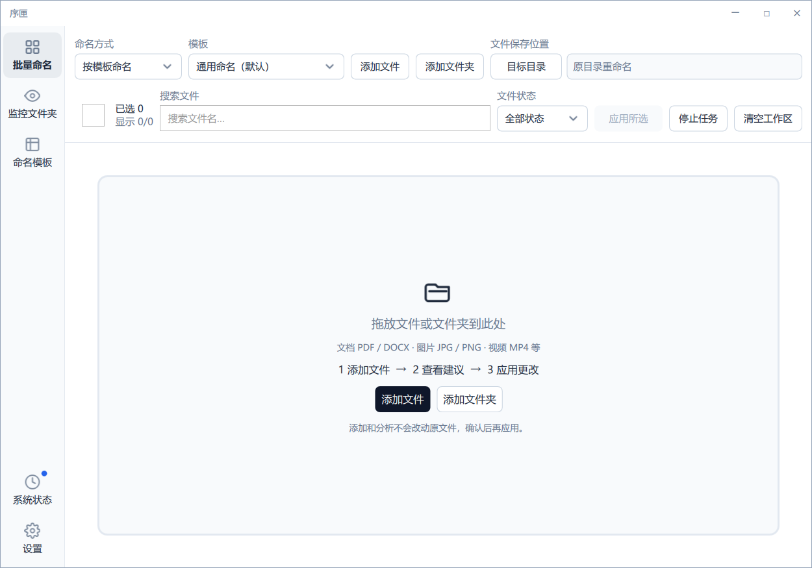
批量命名支持同时导入多个文件或文件夹。临时文件、已知不支持格式和重复项会被跳过，并通过消息提示加入、跳过和不支持数量。导入后，任务以全宽卡片队列显示。
按模板命名与 AI 智能命名
按模板命名
模型提取模板要求的精确字段，再按固定字段顺序、日期格式和分隔符组装文件名。它适合合同、票据或版本文档等字段稳定的资料，也是新会话的默认模式。
AI 智能命名
模型根据当前文件上下文生成具体、可辨识的短摘要，并按统一策略保持同一批次的格式一致。它不是一个包含所有字段的“万能模板”，也不会要求先选模板。
切换模式只影响之后导入的任务；已经导入的任务不会随工具栏切换而改变。重试始终保留导入时的模式和文件名语言。切回按模板命名不会删除所选模板。已有模板、默认模板和监控文件夹配置不受影响；监控文件夹仍按原有模板处理。
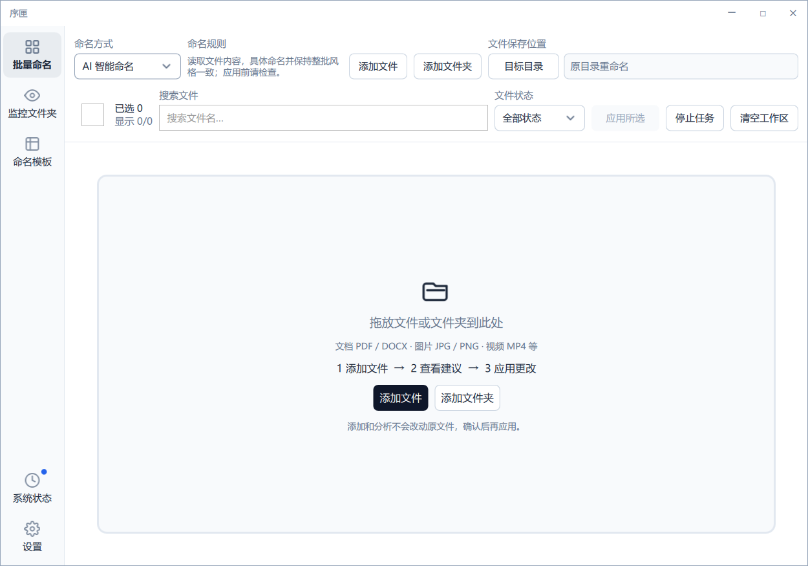
顶部工具
每次添加文件、文件夹或拖入文件后，会先让您确认文件名语言。界面和本手册提供简体中文、繁體中文（香港）、英文三种语言；文件名另外可选日文和西班牙文，共五种。按模板命名可“沿用模板”；AI 智能命名会要求选择实际语言，不把“沿用模板”当作有效选项。
取消不会导入或调用 AI。选择只影响本次及之后新导入的建议，不改写模板、已有任务或磁盘文件。重试保留任务导入时的语言。公司专名和编号可能保持原样，请在应用前检查；监控文件夹仍使用其模板输出语言。
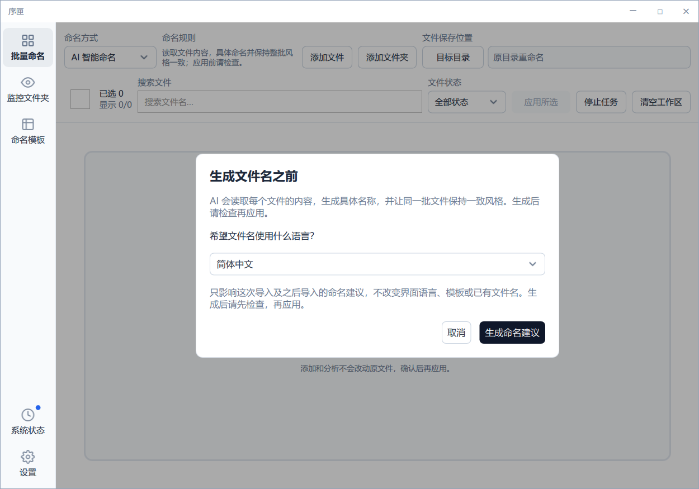
- 模板：决定建议名包含哪些字段及其顺序。
- 添加更多：在保留当前队列时继续导入。
- 目标目录：留空时在原目录重命名；选择后则重命名并移动。
- 搜索：按原文件名或建议名缩小当前可见任务。
- 状态筛选：“全部”加八种任务状态，共九个筛选项。
任务卡与动作
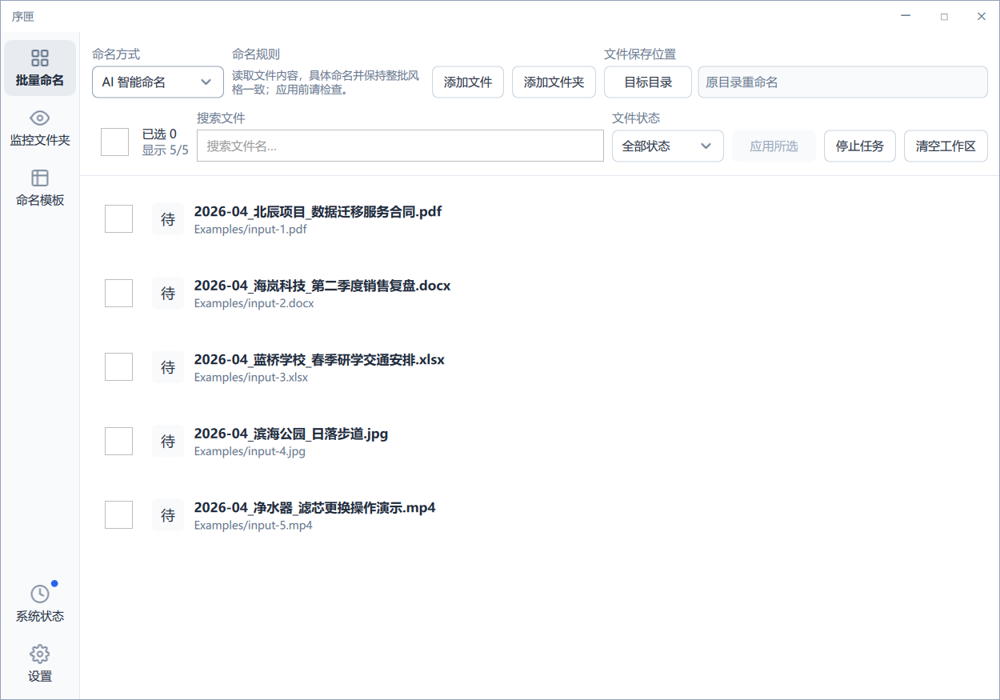
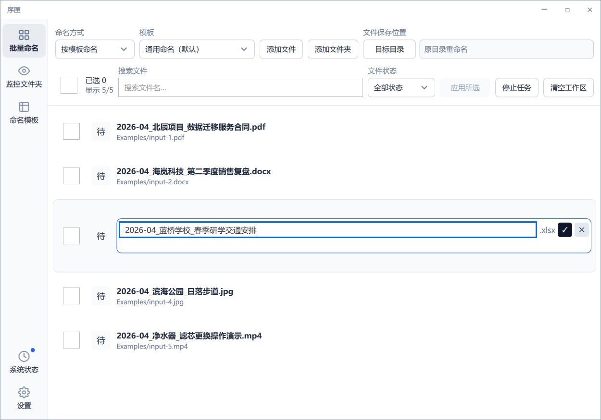
每张卡包含复选框、状态图标、缩略图、建议名称与原文件名。悬停时出现适用于当前状态的操作：编辑、应用、重新生成、忽略、取消或撤销（Undo）。顶部全选与单行复选框只影响当前批量动作范围。
停止、清空与部分成功
“停止待处理任务”会取消尚未完成的队列项；已经在 Provider 侧完成的请求可能仍返回，但已取消任务不会被当作成功应用。应用 显示独立进度和成功或失败数量。一个文件失败不会回滚同批次已经成功的其他文件。
内容不足、响应格式无效、名称过于笼统、缺少证据、语言不符、不安全字符或策略版本不支持都会形成可见失败，不会伪造“已经理解”。首次失败不会产生可编辑建议，不能编辑一个不存在的名字；请修正内容或 Provider 后重新生成。重试始终保留导入时的模式和文件名语言。若要改用按模板命名，请先从工作区移除失败任务，再按新模式重新导入；仅在工具栏切换模式不会改变旧任务。
智能名称的文件名主体上限为 180 个 UTF-16 单元；超过上限会被拒绝并要求重新生成，不会截断成看似完整的名称。本地模拟测试只能证明队列、校验和错误处理的软件合同，不能证明真实模型总能理解具体事实或提供可靠证据。只有成功产生的建议才可在应用前编辑和检查。
清空工作区不会撤销已经写入磁盘的重命名或移动；它只移除当前页面中的任务记录。
返回顶部7. 任务状态
| 状态 | 含义 | 通常可执行的动作 |
|---|---|---|
| 待处理 | 已加入队列，尚未开始本地提取或 AI 分析 | 取消、忽略 |
| 分析中 | 正在提取内容或请求所选本地模型／当前云端 Provider | 取消 |
| 待确认 | 建议已生成，等待人工审核 | 编辑、应用、重新生成、忽略 |
| 已撤销 | 之前的应用已通过撤销（Undo）恢复 | 按当前实现重新处理 |
| 已应用 | 文件已在磁盘完成重命名或移动 | 撤销（Undo） |
| 失败 | 提取、AI、校验或文件操作失败 | 查看原因、修正后重试 |
| 已取消 | 用户停止了尚未完成的任务 | 按需重新加入或重试 |
| 已忽略 | 明确不处理该项 | 按需恢复处理 |
“全部”是筛选视图，不是第九种任务状态。
返回顶部8. 文件夹监控
新建监控
- 进入 监控文件夹，点击“添加文件夹”。内容区左侧显示配置表单。
- 选择源文件夹，可选目标目录，并选择模板。
- 决定是否递归监控子目录。
- 选择 先审核 或 自动应用。
- 保存并启用。新文件稳定后才会进入流程。
先审核
生成建议后进入独立审核队列。只有明确批准的文件才会写磁盘，适合重要资料与新模板。
自动应用
建议通过置信度、资源、路径和文件版本检查后自动应用。失败项保留可见结果，不把整批伪装成成功。
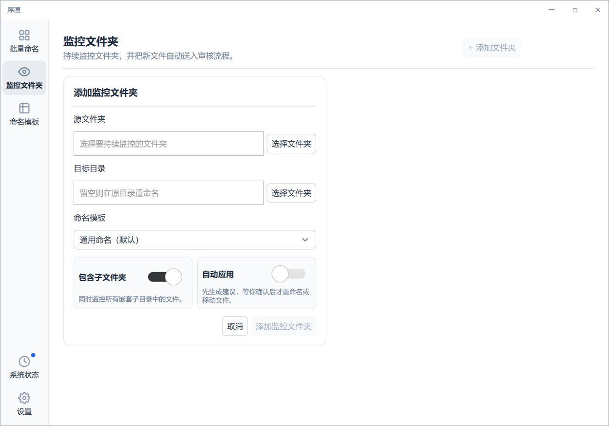
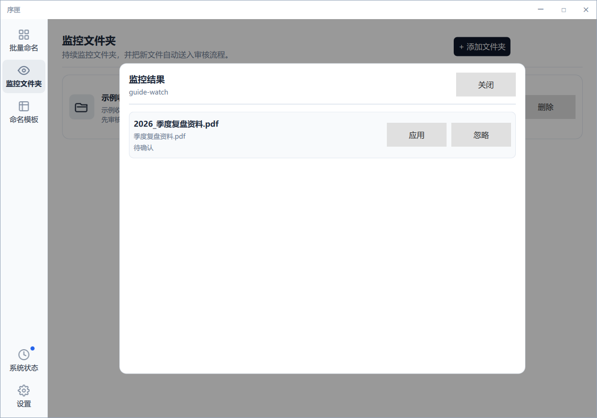
稳定、防抖与回流保护
监控与批量共用顶部处理选择和同一个受管理的本地服务；改变处理方式不会改写监控的模板。部分或未知覆盖、内容不足或本地未就绪时，自动应用会保守保留而不是强行改名；请查看原因，先审核后再决定。
序匣会等待文件写入稳定，合并短时间内重复事件，并跳过常见临时文件。源目录与目标目录的关系会被检查，避免序匣移动出的文件再次触发自己。
暂停状态
- Paused：用户手动暂停，可以手动恢复。
- ResourcePaused：达到并发、队列或连续失败等本地安全护栏后暂停。应先处理原因，再按界面允许的恢复流程继续。
- Error：观察器、路径或权限错误。修复目录问题后重试。
9. 模板与受控词表
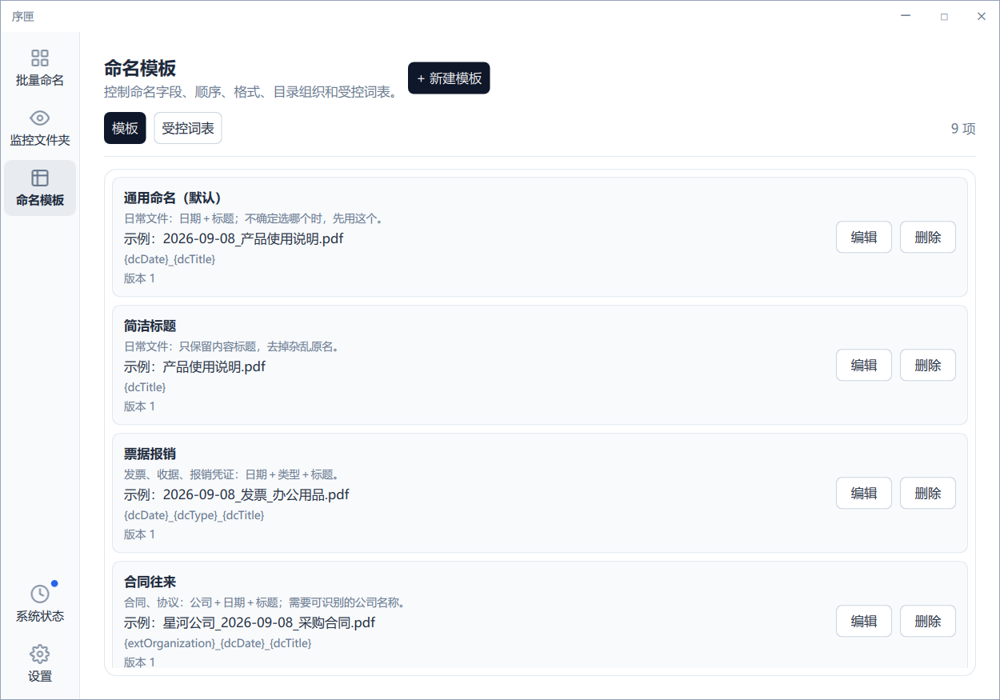
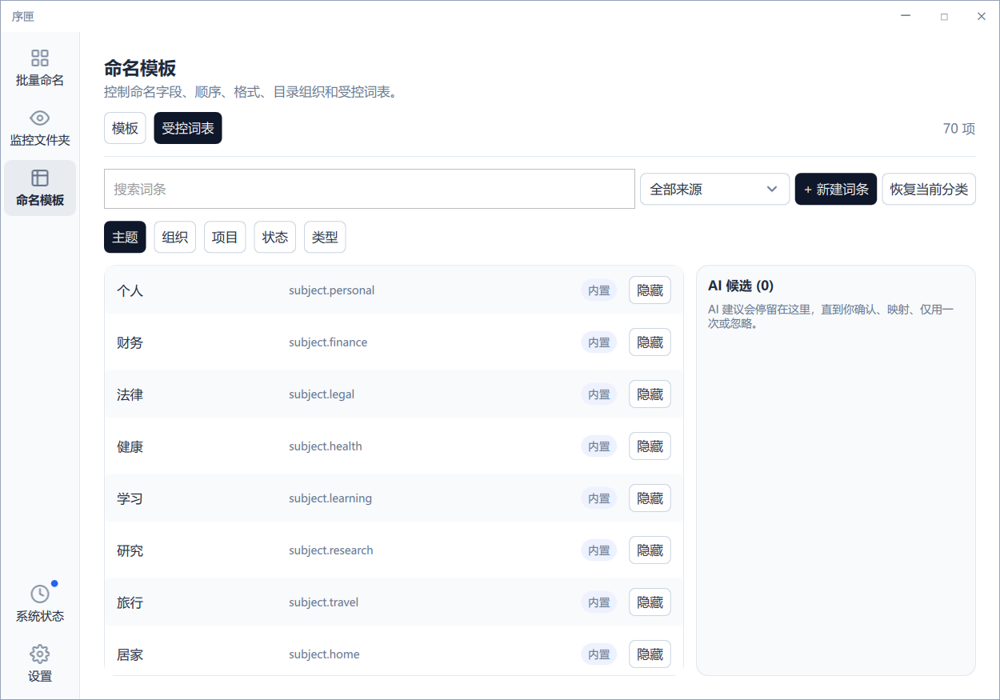
命名模板页面包含“模板”和“受控词表”两个页签，不会额外占用左侧导航入口。
先按场景选一个模板
首次使用提供 9 个模板。不确定选哪个，就选“通用命名（默认）”；不需要日期时选“简洁标题”。在批量重命名页选择模板后，先查看命名建议，再应用。模板卡片上的示例是演示数据，不会填入您的文件内容。
| 模板 | 适用场景 / 必要信息 | 命名示例 |
|---|---|---|
| 通用命名（默认） | 日常文件：日期＋标题 | 2026-09-08_产品使用说明.pdf |
| 简洁标题 | 只保留内容标题 | 产品使用说明.pdf |
| 票据报销 | 发票、收据：日期＋类型＋标题 | 2026-09-08_发票_办公用品.pdf |
| 合同往来 | 需要能识别的公司名称和日期 | 星河公司_2026-09-08_采购合同.pdf |
| 项目资料 | 需要明确的项目名称和日期 | 官网改版_2026-09-08_需求说明.docx |
| 学习资料 | 主题＋标题，方便按学习内容查找 | 英语学习_阅读笔记.pdf |
| 论文文献 | 作者＋年月＋标题 | 张三_2026-09_图像识别研究.pdf |
| 照片与视频 | 主题＋日期＋内容标题；画面识别需要支持图片的模型 | 旅行_2026-09-08_海边日落.jpg |
| 版本文档 | 项目＋标题＋版本号，需要明确的版本信息 | 官网改版_设计方案_V2.docx |
这些模板均可编辑。升级不会覆盖已有模板，也不会重新创建您已经删除的预设。模板没有自动移入分类目录的设置，原文件扩展名始终保留；选择模板本身不改动磁盘。公司、项目、作者或版本等必要信息缺失时不会凭空编造，请改用更简单的模板或补全信息后重新生成建议。
合成示例：2026-09-08_星河公司_官网改版_需求评审_V2.docx 与 海边日落_低角度逆光_慢镜头.mp4。示例为合成演示结果，不是实际模型截图，也不保证真实 Provider 对任意文件都产生相同质量。
命名字段
| 字段 | 用途示例 | 缺失时 |
|---|---|---|
| dcDate | 文档日期 | 必需字段缺失时进入需重新生成或待确认状态，不能静默生成一个可应用的残缺名称。 |
| dcTitle | 核心标题 | |
| dcSubject | 主题类别 | |
| dcType | 文件类型，如 report、invoice | |
| dcCreator | 作者或创建者 | |
| dcIdentifier | 编号或唯一标识 | |
| extOrganization | 组织 | |
| extProject | 项目 | |
| extStatus | 状态 | |
| extVersion | 版本 |
您可以调整字段顺序、日期格式、下划线或短横线分隔符、输出语言，以及“平铺”“按主题分类”“按类型分类”“按项目分类”等组织方式。日期选项附有示例；字段显示中文名称及对应标识，例如“标题 {dcTitle}”。默认模板使用日期与标题。
在“设置 → 通用 → 默认命名模板”按名称选择模板，无需填写内部编号。“自动（使用首个模板）”沿用首个模板。若原先选择的模板已删除，页面会提示重新选择，并阻止保存，避免悄悄改用其他模板。
监控文件夹表单的“选择文件夹”分别选择源目录和可选目标目录。“自动应用”关闭时，先生成建议，等您确认后才改名或移动；开启后，符合处理条件的文件会自动重命名并移动，无需逐个确认。
受控词表
subject、organization、project、status、type 五类词条可以搜索、筛选、新增、编辑和删除。内置词条是通用起点；您可以按个人业务改成自己的词汇。
AI 提议的新词条不会直接污染正式词表。您可以仅本次使用，也可以审核后接受为可复用词条；拒绝后则不加入正式词表。
返回顶部10. 图片、扫描件和视频
图片
序匣会在本地纠正方向、处理透明通道并限制图像尺寸，再把缩放图像交给已就绪的本地视觉模型，或在云端模式交给支持视觉能力的 Provider。原始高分辨率文件不因“分析”被修改。
扫描 PDF
有文字层的 PDF 优先提取文字。扫描 PDF 可在本地按安全页数上限渲染为图片，再交给视觉模型。超过上限的页面不会无限制渲染。
视频
序匣在本地提取有顺序的代表性关键帧，再把关键帧按图片分析。经济、均衡和高质量模式通常分别使用约 4、6、8 帧，同时受用户设置的帧数与资源护栏限制。序匣不会上传完整视频。
11. 资源限制、缓存与用量
这些设置控制本机资源和请求规模，不代表第三方服务商的计费规则。
| 设置 | 控制内容 | 建议 |
|---|---|---|
| 最大文件大小 | 阻止超大文件进入分析；允许范围 1–500 MB | 先使用默认值，确有需要再提高 |
| PDF 页数上限 | 限制扫描页渲染与发送数量 | 选择足以代表内容的页数 |
| 视频关键帧上限 | 限制本地抽帧和视觉请求规模 | 普通素材通常无需超过高质量模式默认规模 |
| 并发上限 | 限制同时分析数量 | 网络或机器较慢时降低 |
| 重试上限 | 限制可重试网络或服务错误次数 | 持续认证失败不会靠重试解决 |
质量模式
经济、均衡、高质量主要调整图像尺寸、视频帧数、请求规模与适用模型能力。它们不是“基础命名”和“专业命名”的等级承诺。
本地缓存
设置中提供本地缓存状态和清理入口，缓存组件可供相容流程使用；但当前 AI 智能命名的批量分析管线不会读取或写入命名建议缓存。不要根据缓存界面推断智能建议已经缓存，重新生成仍按当前任务发起分析。
本地与云端缓存分区；清理建议缓存不等于清除本地模型资源，也不是释放内存或卸载服务的承诺。资源准备状态与非货币用量是不同信息。
非货币用量
用量页面可显示 Provider、请求次数、输入 Token 和输出 Token。它用于理解请求规模；当尚无记录时显示空态，服务不可用时明确显示不可用，而不是伪造为零。
返回顶部12. 隐私与数据流
| 内容类型 | 本地处理 | 仅云端模式可能发送给当前 Provider |
|---|---|---|
| 文档或表格 | 提取文字与元数据 | 提取后的必要文字、元数据和命名上下文 |
| 普通图片 | 方向纠正、透明通道处理、缩放 | 缩放后的图像与必要元数据 |
| 扫描 PDF | 在页数上限内渲染扫描页 | 缩放后的扫描页图像与必要上下文 |
| 视频 | 本地提取 4–8 个关键帧并保持顺序 | 关键帧图像与摘要；不会上传完整视频 |
- API Key 仅交给系统凭据管理器和实际请求层，不应出现在诊断包或普通日志中。
- Provider 请求载荷使用提取结果、缩放图像或关键帧，不应包含完整源路径。
- 诊断信息会对用户名、驱动器路径、网络共享路径和疑似凭据字段进行脱敏。
- 最终云端保存期限、训练政策和地区合规由您选择的 Provider 决定，请以其账户设置与服务条款为准。
- 本地承诺只约束序匣，不控制其他应用或操作系统同步，也不代表整个电脑没有联网；本地受管理子进程没有网络能力，不以任意本地端口作为隐私证明。
- 本地日志与诊断不记录文件内容、密钥或源路径；分享诊断前仍应检查。没有隐藏遥测或失败后暗中转云端。
13.撤销（Undo）与文件安全
什么时候会写磁盘
- 导入、提取、生成建议、手工修改建议：不写磁盘文件名。
- 应用、自动应用：执行实际重命名或移动。
- 撤销（Undo）：把最近尚未撤销的成功记录按反向顺序恢复。
执行前保护
- 扩展名保护：建议名不得把原扩展名替换成另一类型。
- 路径边界：目标必须留在允许目录中，符号链接和相邻前缀不能绕过。
- 版本检查：分析后文件大小或修改时间发生变化时，旧建议不能直接应用到新内容。
- 冲突处理：目标已存在时按安全策略编号或失败，不静默覆盖已有文件。
- 逐文件结果：每个文件独立返回成功或失败，并绑定正确任务与批次。
- 同卷限制：应用和撤销目前仅支持同卷。跨卷移动会安全失败并保留源文件，不会改成复制后删除；目录链接、身份不安全、扩展名改变或已占用目标均拒绝，不覆盖已有文件。
关闭工作区或清空任务列表不会删除撤销（Undo）历史；但清空工作区不会撤销已经完成的文件操作。
返回顶部14. 诊断与故障排查
| 现象 | 常见原因 | 处理 |
|---|---|---|
| 测试连接认证失败 | Key 无效、模型无权限、地址错误 | 重新复制配置，确认账户允许该模型；字段变更后再次测试 |
| 429 或短时服务错误 | Provider 限流或临时不可用 | 等待退避完成，降低并发；不要无限重试 |
| 超时或网络失败 | 网络、代理、地址或服务状态异常 | 确认当前 Provider 可访问，再使用测试连接 |
| 图片或扫描件没有视觉建议 | 当前 Provider 不支持图片，或触发大小或页数上限 | 查看能力标识和任务提示，调整 Provider 或本地限制 |
| 应用 提示源文件已变化 | 分析后文件被外部程序修改 | 重新分析，确保建议绑定当前内容 |
| 目标冲突或文件占用 | 同名文件已存在，或其他程序锁定文件 | 关闭占用程序、换目标目录或接受安全编号 |
| 监控文件夹 显示 ResourcePaused | 队列、并发或连续失败触发本地护栏 | 检查失败原因和资源设置，确认安全后恢复 |
| 缓存结果不符合当前设置 | 任务仍使用旧上下文，或缓存需清理 | 重新生成；必要时在设置中清理缓存 |
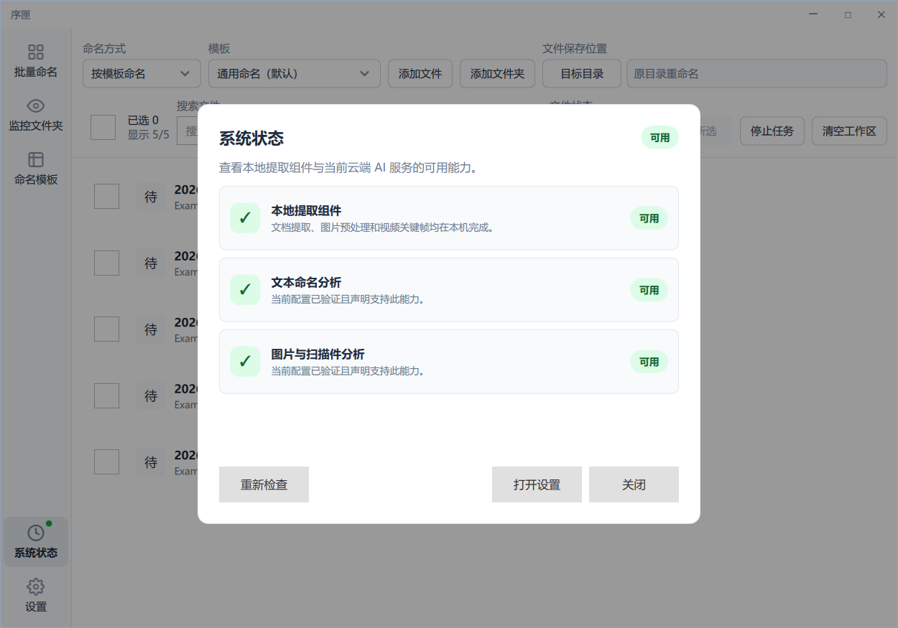
导出诊断包
在设置的诊断区域导出包，再提供给维护者。导出前仍建议人工查看内容，确认不包含您不希望分享的信息。诊断包用于配置结构、组件状态和错误分类，不应包含 API Key。
15. 支持格式
扩展名不代表文件一定完整有效；损坏、加密或伪装格式仍可能无法提取。
| 类别 | 扩展名 |
|---|---|
| 文档与表格 | PDF, DOC, DOCX, PPT, PPTX, XLS, XLSX, TXT, MD, CSV, TSV, RTF, HTML, XML, EPUB, ODT, ODS, ODP |
| 图片 | JPG, JPEG, PNG, WebP, GIF, BMP, TIF, TIFF, AVIF |
| 视频 | MP4, MOV, M4V, MKV, AVI, WebM, TS, MTS, M2TS, WMV, FLV, 3GP, 3G2, MXF, MPG, MPEG, OGV |
某格式“可导入”不等于所选模型一定能理解其视觉内容。序匣先尝试本地提取，再依据本地就绪状态或云端 Provider 能力选择分析路径，或显示降级提示。
返回顶部16. 常见问题
是否必须使用 DeepSeek 或 Qwen？
云端不是。它们是可选预设；MiMo、智谱、Kimi 或兼容的 Custom Provider 也可使用，前提是能力、地址和结构化输出符合任务。本地首版则固定使用本地章节的 Qwen 模型，不能换成任意模型。
为什么生成了建议却没有改文件？
这是正常安全语义。建议生成与手工修改都不会写磁盘；先审核 需要您明确 应用。
为什么图片可以导入却不能识别？
本地时先检查服务是否就绪，云端时检查当前 Provider 的图片或扫描件能力；再确认图片大小、PDF 页数与资源上限。只有文本能力的模型无法替代真实视觉理解。
为何 监控文件夹 没有自动应用？
可能使用了 先审核、文件尚未稳定、临时文件被过滤、置信度不足、资源护栏暂停，或路径或文件版本检查失败。
怎样恢复已经改名的文件？
使用撤销（Undo）。系统会按最近未撤销批次和批内反向顺序恢复成功记录。外部修改或目标占用会导致个别恢复失败。
可以使用自己的兼容接口吗？
可以。新建 Custom Provider，填写其 Base URL、模型和 Key，并通过测试连接后再激活。
软件是否代替第三方 Provider 收费？
序匣不提供云端额度，也不展示货币账单。您自行配置的第三方账户规则由相应服务商管理；序匣只记录非货币请求用量。
返回顶部17. 版本与支持边界
本手册对应序匣 1.0.0 Windows 桌面版，内容以当前正式入口的可观察行为为准。
- 首期为个人单机工具，不包含登录、团队协作、云同步、许可证、支付或自动更新后台。
- 界面语言提供简体中文、英文和繁體中文（香港）。切换会即时预览；保存后才持久化，取消或放弃更改会恢复最近已保存的语言。界面语言不会改变文件名输出语言。日语、韩语、越南语、泰语界面仍为后续扩展。
- Provider、模型和 Base URL 可以变化。请使用账户后台当前可用且能力匹配的配置。
- 本手册完全离线，不依赖在线字体、脚本或资源；可通过浏览器打印为 PDF。
如果界面与本手册出现差异，请先确认软件版本，再通过诊断信息报告具体入口、操作步骤、任务状态和错误分类。
返回顶部18. 本地隐私与资源准备
两个独立选择：怎样命名，在哪里分析
按模板命名／AI 智能命名决定命名策略；云端 AI／本地隐私决定处理位置。两种处理方式都支持两种命名模式，不会改写已有模板或默认模板。界面语言与导入时确认的文件名语言也互相独立。
在标题栏下方的永久处理栏选择本地隐私；批量命名和监控文件夹共用这一选择。选择 LOCAL 会立即阻止之后的新云端请求，即使资源缺失、正在准备、失败、暂停或取消也一样。已经发送的云端请求无法召回。本地失败不会自动回退到云端；只有明确选择云端 AI 才重新开放新的云端请求。
第一次使用：先检查，再明确授权
- 先选择本地隐私，再打开设置 → 通用，向下找到本地资源卡片。点击检查资源只检查已有状态，不开始下载或模型运行。
- 阅读模型、固定版本、资源位置、来源主机、已验证字节、已取得字节和剩余传输提示。首版本地模型是 Qwen/Qwen3.5-4B 指令模型，使用 Q4_K_M 及视觉投影资源，运行时为 Windows x64 CPU llama.cpp b10885；不是 Base 模型，也不是云端 Qwen API。
- 需要联网取得资源时，点击下载并启用。这只展开可见的同意说明；只有再点击同意，下载公开资源才启动下载。固定公开来源主机为
github.com和huggingface.co，不发送文档、名称、路径、命名提示或密钥。拒绝时可点“暂不下载”。 - 不授权下载时，可点击导入离线文件夹，选取含规定固定文件集合的文件夹：
llama-b10885-bin-win-cpu-x64.zip、Qwen3.5-4B-Q4_K_M.gguf和mmproj-F16.gguf，须匹配固定版本、大小与校验值。这不是任意模型、可执行程序或自定义目录清单入口；导入读取并验证，不会改动原文件夹。 - 已有资源时点击准备已有资源：重新验证资源，启动与批量／监控共用的受管理服务，并进行真实自检。无需命令行、开发工具或自己启动服务器。验证后可复用离线资源，不必重复下载。
- 等待顶部处理栏显示本地隐私已启用，服务自检通过（READY），再导入少量可恢复文件。逐项查看建议、证据和覆盖提示，确认后应用；若未就绪，先解决资源状态，不要把“资源可用”当成“模型已启用”。
容量、速度和状态都不是保证
固定资源共 3431786583 字节，约 3.43 GB（十进制），包含随程序提供的 18425079 字节运行时 ZIP。未复用资源前，模型及视觉资源的远程传输上界为 3413361504 字节；运行时解压额外增加 46749981 字节，每次运行还有暂存空间。因此资源总字节不是精确的所需空闲空间，请依据卡片位置、提示及实际磁盘余量留出空间。
资源在当前操作系统用户的数据目录 Xuxia/local-ai，与程序目录分开；以卡片显示的位置为准。字节数字是上次验证、观察或估算的快照，已接收字节不等于已验证或保证保留；“剩余”不是最终保留空间。硬件准入检查不是性能保证，不承诺统一的最低内存、启动时长或处理速度。首次准备和模型运行可能较慢，内容与硬件也影响结果质量。
| 资源／服务状态 | 应如何理解 |
|---|---|
| MISSING／PARTIAL | 缺失或仅有部分资源；尚未启用。 |
| TRANSFERRING／VERIFYING／PREPARING | 传输、校验或准备中；进度不代表可立即分析。 |
| AVAILABLE | 已验证，但尚未启用；仍须由同一个服务完成准备。 |
| READY | 当前本地服务已通过真实自检，且本地仍被选中，才可处理新任务。 |
| FAILED／CANCELLED／PAUSED | 失败、已取消或已暂停，不是就绪；本地选择保留，不转云端。 |
| CLEANUP_PENDING／RECOVERY_REQUIRED | 清理尚未完成或需要保守恢复；不要自行清空资源或日志目录。 |
暂停、取消、修复与恢复
“暂停”或“取消资源操作”发出请求后仍须等待操作所有者结束其工作，取消请求不代表工作立即结束；等待状态消失后再执行可用的新动作。若保留的是当前已知所有者，可按界面允许的重试当前所有者清理。未知的旧所有者、脏日志记录或归属不明确的状态，需要保守恢复：保留证据并寻求支持，不自动重置或删除。
隔离当前损坏项只处理程序明确识别的当前固定资源损坏项或部分项，并保留失败证据；不会删除文档、未知文件或日志记录。它不是清空所有资源、卸载服务或释放内存功能。不要手动删除未知文件来制造“就绪”。
本地内容覆盖和名称审核
文字、图片、扫描 PDF 页及视频关键帧在本机准备；完整 PDF、完整视频或源路径不会进入模型请求，只提供所需提取文字和图像帧。视频仍是抽帧分析，不保证理解整段视频。空白、不可读或覆盖不完整会提示或拒绝；不足内容不会被补成虚构建议。长文、部分或未知覆盖需要审核，自动应用会保守保留。
所有 AI 输出仍须通过结构、证据和文件名安全校验。除明确配置的监控自动应用外，输出只是建议，直到您应用才改文件。中文正字规范化只处理新生成的中文名称：简体输出采用简体，香港输出采用香港繁体；不改写源文、证据、已保存模板或历史。字形转换不保证语义翻译，专名仍须审核；其他语言、ASCII、日期、版本及扩展名保留。